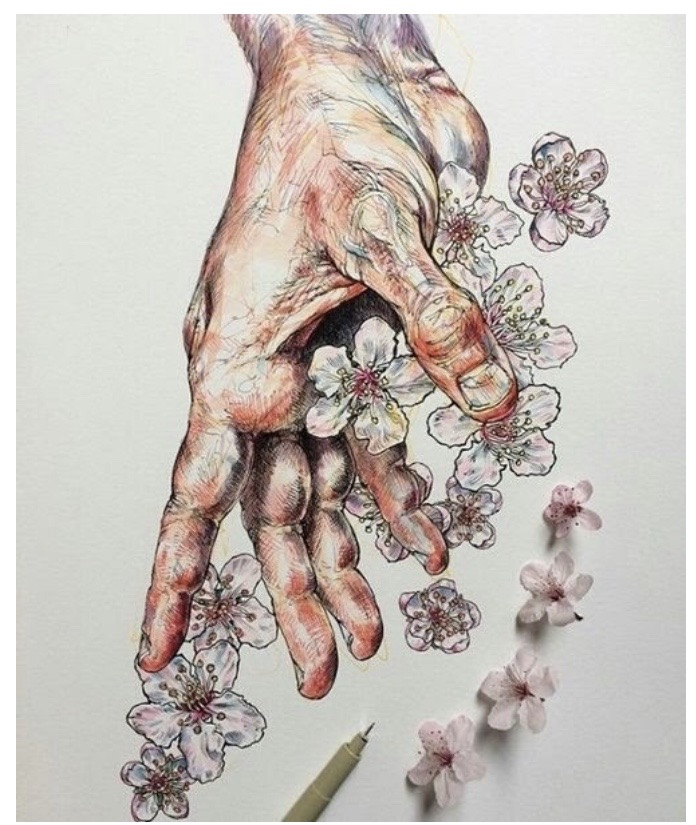
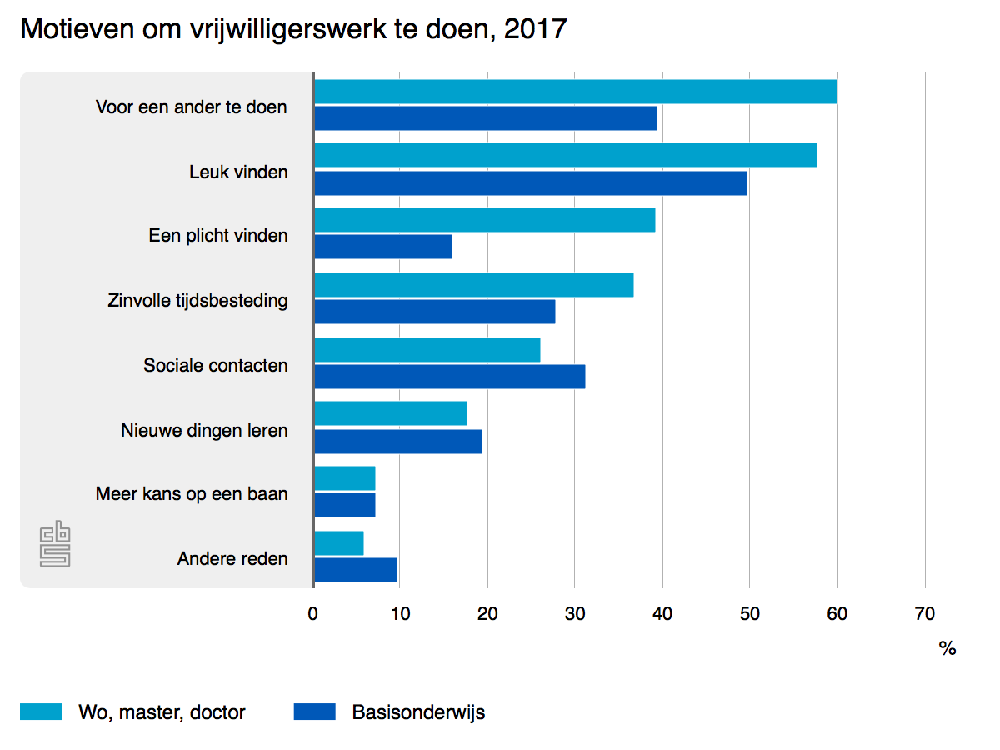

Van Liefdadigheid naar Commercie
Wat is de waarde van vrijwilligerswerk?
Martell Rengelink en Livia Holties
Montessori Lyceum Amsterdam
24 januari 2020
Inleiding
Wij zijn Martell Rengelink (5 havo, 17 jaar) en Livia Holties (6 vwo, 18 jaar), leerlingen van het Montessori Lyceum Amsterdam. Wij hebben er dit jaar voor gekozen een profielwerkstuk te maken over vrijwilligerswerk. Inleiding Veel jongeren doen tegenwoordig na hun middelbare school vrijwilligerswerk in het buitenland als onderdeel van een ‘tussenjaar’ waarin ze de wereld willen ontdekken en zichzelf willen ontplooien. Het fenomeen ‘tussenjaar’ is de afgelopen jaren sterk gegroeid, mede als gevolg van het toegenomen aanbod. De opkomst van internet en sociale media heeft hier sterk aan bijgedragen. Het is namelijk veel eenvoudiger geworden om vraag en aanbod bij elkaar te brengen en ervaringen uit te wisselen. Jongeren zijn vaak geïnteresseerd zijn in vrijwilligerswerk in het buitenland voor hun eigen ontwikkeling, maar veel organisaties zijn ook sterk afhankelijk van vrijwilligers. Soms botsen deze belangen. Ook in Nederland verandert vrijwilligerswerk van karakter. Terwijl vrijwilligerswerk vroeger vooral vanuit de kerk werd georganiseerd, zie je nu veel meer individuele initiatieven om mensen ‘te helpen’, bijvoorbeeld in de vorm van sponsoracties. In dit profielwerkstuk willen wij onderzoeken wat de voor- en nadelen van vrijwilligerswerk zijn en hoe effectief het is. Onze hoofdvraag hierbij is: ‘Wat is de waarde van vrijwilligerswerk?'
 plopp
plopp
De geschiedenis
1.1 Hoe is vrijwilligerswerk ontstaan? Vrijwilligerswerk in Nederland ontstond vanuit de kerk, toen Nederland nog erg verzuild was en elke geloofsgemeenschap zijn eigen liefdadigheid voor de eigen dorpen en buurten verzorgde. In Amsterdam ontstond al rond de Tweede Wereldoorlog een organisatie die zorgde voor een betere positie van werkende vrouwen, het Korps Vrouwelijke Vrijwilligers (KVV), opgericht in 1938. Door de opkomende oorlog en de economische crisis verslechterde de positie voor vrouwen. Het idee achter het vrijwilligerswerk was dat vrouwen actiever zouden worden in de maatschappij. Tijdens de oorlog probeerden men vrijwilligerswerk stiekem te regelen, maar in 1945 werd men echt actief met onder andere projecten waarbij maaltijden werden rondgebracht. Rond 1977 werden steeds meer mannen actief in het vrijwilligerswerk. In 2014 veranderde de naam naar ‘Unie Van Vrijwilligers Nederland’ en in 2017 zetten al veel mensen zich in voor het vrijwilligerswerk, vooral in de sector van zorg en welzijn. Buiten Nederland ontstond vrijwilligerswerk na de dekolonisatie, uit schuldgevoel over de onderdrukking en armoede die het westen in arme landen had achtergelaten. In de jaren zeventig werkten de eerste Nederlanders vooral voor SNV, de oudste buitenlandse goede doelen-organisatie in Nederland. De eerste lichting vrijwilligers waren avonturiers, die dan bijvoorbeeld naar Burkina Faso gingen om daar waterputten te slaan. Verandering Vrijwilligerswerk verandert tegelijk met de veranderingen in de samenleving. Vroeger ging het vooral om helpen in de sportkantine of het bejaardentehuis, nu worden via sociale media acties gestart. Bijvoorbeeld via crowdfunding of sponsoring, zoals zwemmen of hardlopen voor een goed doel. Een belangrijke verandering is dat steeds meer vrouwen zijn gaan werken. Vroeger werkten zij als vrijwilliger, bijvoorbeeld in de schoolbibliotheek of als luizenmoeder. Daar hebben ze nu geen tijd meer voor vanwege hun baan. Scholen kunnen soms zelfs niet meer op schoolreisje, omdat ze niet genoeg hulpouders hebben. Hoe vrijwilligerswerk zich mee-ontwikkelt met de samenleving vertellen wij in het hoofdstuk ‘maatschappelijke context’.

1.2 Welke soorten vrijwilligerswerk zijn er? Vrijwilligerswerk is werk dat je verricht, dat niet betaald wordt en waarbij je weinig verplichtingen hebt. Iemand zet zich in voor de maatschappij, maar het is vaak niet het enige werk dat mensen doen, ze hebben daarnaast ook een betaalde baan. Direct en indirect contact Er bestaan verschillende soorten vrijwilligerswerk, het onderscheid wordt gemaakt in de mate van contact tussen vrijwilliger en hulpbehoevende en de tijdsduur van het project. Qua mate van contact bestaat er vrijwilligerswerk waarbij de vrijwilliger direct contact heeft met de ontvanger van de hulp - dit kan voorkomen bij werk in de zorg of welzijn of in het geval van een teamleider bij een sportvereniging. Daarnaast is er ook indirect vrijwilligerswerk, waarbij er geen direct contact is tussen de ontvanger en de vrijwilliger. Denk bijvoorbeeld aan fondsenwerving, een bestuursfunctie of het schrijven van een blog voor een site. Qua tijdsduur van een project zijn er drie verschillende soorten vrijwilligers. De zogenoemde ‘episodische’ vrijwilliger - een term bedacht door Nancy Mcduff rond 1990 - doet vrijwilligerswerk op korte termijn. Deze werkt niet lang aan een bepaald project, maar verricht een eenmalige opdracht zoals bijvoorbeeld NLdoet - de actie die elk jaar door het Oranje Fonds wordt georganiseerd. Bij deze actie worden vrijwilligers uit heel Nederland uitgenodigd om een dag vrijwilligerswerk te verrichten. Koning Willem-Alexander en Koningin Maxima doen hier ook elk jaar aan mee. Daar tegenover staan de ‘traditionele’ vrijwilligers, die juist wél gebonden zijn aan grotere opdrachten die langer duren. Traditionele vrijwilligers werken bijvoorbeeld een langere periode voor een bejaarde. Als derde zijn er ‘geleide’ vrijwilligers, die hun vrijwillige inzet verrichten, totdat zij een betaalde baan aangeboden krijgen. Een goed voorbeeld van een ‘geleide’ vrijwilliger is Esther Janmaat, met wie wij een interview hebben afgenomen. Zij kon na haar studie niet aan een baan komen. Zij heeft onder andere bij Amnesty International en het Leger des Heils gewerkt als vrijwilliger. Esther Janmaat heeft vrijwilligerswerk gedaan totdat zij een betaalde baan kreeg. (Zie interview in bijlage op pagina 32) Vrijwilligerswerk komt voor in allerlei gebieden van de samenleving, voorbeelden zijn: helpen in eigen buurt, in eigen land of zelfs in het buitenland. Je kunt werk verrichten bij scholen, sportverenigingen, verzorgingstehuizen, kerken, weeshuizen in het buitenland of je kunt dieren verzorgen in bijvoorbeeld Afrika. Er is genoeg vrijwilligerswerk te doen en dit komt in grote mate voor in Nederland.
Maatschappelijke beweging
2.1 Wat is de invloed van maatschappelijke veranderingen op vrijwilligerswerk? Vrijwilligerswerk ontwikkelt mee met de samenleving. Het gebruik van mobiele telefoons en sociale media heeft grote gevolgen gehad voor de ontwikkeling van vrijwilligerswerk. Ook is internet een belangrijke factor geworden om vraag en aanbod bij elkaar te brengen. “Het aantal vrijwilligers is al jaren stabiel, wel hebben we er alleen minder tijd voor.” In een artikel in het AD zegt Joost van Alkemade, voorzitter van de vereniging Nederlandse Organisaties Vrijwilligerswerk (NOV) in Utrecht, dat het aantal vrijwilligers al jaren stabiel is, maar dat mensen er wel steeds minder tijd aan besteden. Dat komt doordat vrijwilligers hun tijd effectiever kunnen inzetten door technologische veranderingen. Tien jaar geleden besteedden Nederlanders nog ongeveer 6,5 uur per week aan vrijwilligerswerk. Nu is dat gedaald naar 4,5 uur per week. Nu kan men bijvoorbeeld makkelijk afspraken maken via whatsapp of andere internetverbindingen die er vroeger niet waren. Toegankelijkheid Ook Lucas Meijs, hoogleraar Strategische Filantropie en Vrijwilligerswerk aan de Rotterdam School of Management van de Erasmus Universiteit Rotterdam, zegt dat er nieuwe mogelijkheden voor vrijwilligerswerk zijn ontstaan door technologische ontwikkelingen. “Het grootste voordeel is dat vrijwilligerswerk minder plaats- en tijdgebonden is”. Zo zegt Meijs in een artikel (02-05-19) geschreven door Wilke Martens in Idem Rotterdam: “Campagnevoeren voor een politieke partij kan op Twitter terwijl je op de trein staat te wachten. Of kletsen met eenzame ouderen kan via de chat als je zelf thuis op de bank zit. Ook geld inzamelen voor een goed doel, bijvoorbeeld via een sponsorloop, kan via een online crowdfundingsactie in plaats van langs de deuren te gaan. Het is kortom veel gemakkelijker geworden om vrijwilligerswerk te doen.” Online Daarnaast benoemt Meijs het feit dat vrijwilligerswerk toegankelijker is geworden. Zo kunnen online netwerken gebruikt worden om vrijwilligers te zoeken die bijvoorbeeld bepaalde dingen op een site kunnen uittypen. Alles kan nu via internet geregeld worden. Zo kunnen mensen vanuit huis werken, en ook kunnen mensen op deze manier zelfs vrijwilligerswerk verrichten als ze bijvoorbeeld in een rolstoel zitten. Bepaalde soorten vrijwilligerswerk kunnen zelfs verdwijnen door de nieuwe mogelijkheden van het internet. Meijs geeft als voorbeeld dat tegenwoordig via social media mensen bij elkaar kunnen komen en een wandeltocht kunnen organiseren. Op deze manier hoef je je niet meer aan te melden bij wandelsportverenigingen en ben je veel minder afhankelijk, wat aantrekkelijk is voor veel mensen. Voor vrijwilligerswerk in het buitenland heeft de technologie ook grote voordelen gehad. Tegenwoordig worden sites als Facebook, Twitter en Instagram gebruikt om vrijwilligers te werven. Organisaties kunnen oproepen plaatsen en zorgen voor aantrekkelijke advertenties, zo kunnen zij nu veel makkelijker aan vrijwilligers en donateurs komen. Ook onze geïnterviewden Roos Tieges en Karel en Maria Lichtendonk komen op verschillende manieren aan hun nodige contacten.

De economie
3.1 Is vrijwilligerswerk commercieel geworden? “Het tussenjaar als toppunt van commercie” Nadat de hoogte van de studiefinanciering in 2014 en 2015 daalde, lijkt een tussenjaar de laatste jaren steeds populairder te worden. Hierdoor kozen veel studenten voor een tussenjaar. Vooral in het hbo is het aantal eerstejaars met een tussenjaar gestegen ten opzichte van vier jaar geleden, in tegenstelling tot op de universiteit waar het minder gestegen is. Commercie Er zijn tientallen organisaties die combinaties aanbieden van bijvoorbeeld een taal leren, vrijwilligerswerk doen en andere activiteiten die daarbij horen. Alleen vragen ze hier meestal relatief veel geld voor. Deze organisaties zijn lang niet allemaal even betrouwbaar. Steeds meer vrijwilligerswerk wordt zelfs bedacht om mensen aan te trekken, puur om geld te verdienen. Zo blijken kinderen soms helemaal geen wees te zijn of is de Engelse les helemaal niet voor arme kinderen, maar juist voor kinderen uit de middenklasse. In Afrika worden veel jongeren gelokt om jonge leeuwtjes te verzorgen, maar die blijken te worden gefokt voor de jacht of voor het vrijwilligerswerk zelf. Om vrijwilligerswerk te verrichten in het buitenland is het belangrijk om te kijken hoe betrouwbaar de organisatie is omdat je er veel geld voor betaalt. Initiatief Er zijn tegenwoordig steeds meer mensen die op eigen initiatiefs iets goed willen doen voor de samenleving. Mensen gaan bijvoorbeeld op vakantie ergens heen en besluiten dat ze daar een schooltje willen oprichten. Dit heeft goede bedoelingen om het land beter te maken. Maar waar vaak niet aan gedacht wordt, is dat je niet alleen een schooltje kan bouwen. Hier komt meer bij kijken, hier zijn docenten, materialen en andere factoren voor nodig. Goededoelen organisaties (ngo’s) zorgen er juist voor dat zij dit wel kunnen regelen door middel van sponsoren. Doordat mensen steeds vaker zelf iets willen gaan doen, krijgen deze organisaties minder donaties. Hierdoor is het dus vaak niet effectief om op eigen initiatief iets op te richten. Het kost veel moeite en het mislukt vaak, ook al bedoelen mensen het goed. Betrouwbaarheid De VVC, Vereniging Volunteer Correct, een organisatie die het internationaal vrijwilligerswerk promoot, herkent deze bezwaren en wil ervoor zorgen dat de kwaliteit wordt verbeterd. Ook hebben zij als doel om internationaal vrijwilligerswerk zo eerlijk, duurzaam en verantwoord mogelijk te maken. De VVC heeft in 2018 een werkgroep gecreëerd waarin 6 vertegenwoordigers uit de organisatie goed nadenken over vragen zoals; “wat is verantwoord vrijwilligerswerk?” De VVC focust zich als organisatie op aspecten als Organisatie transparantie en Prijzen en specificatie. Ook Roos Tieges denkt dat een groot deel van de organisaties die vrijwilligers host dat niet doet met de intentie dat het erg helpt, maar dat ze het vooral doen om geld te verdienen aan vrijwilligers die dus soms erg veel betalen. “Daar moet je goed opletten omdat het zonde van je tijd is om een project te doen wat vervolgens na drie weken weer wordt afgebroken.” Ook voor de organisatie kost het veel tijd om te zorgen dat het werk van de vrijwilligers nuttig is. Je moet namelijk eerst zorgen dat zij goede begeleiding krijgen. Daarom is volgens Roos Tieges in ontwikkelingslanden de inzet van lokale mensen soms het meest effectief omdat zij de taal spreken. (Zie interview in bijlage op pagina 26) “Als organisatie moet je je goed afvragen bij elke activiteit of nieuw project of het altijd nut heeft om internationale vrijwilligers in te zetten” - Roos Tieges
SearchDe psychologie
4.1 Doen mensen vrijwilligerswerk uit ideologie of om zichzelf goed te voelen? “Goed doen of goed voelen?” Eigen gevoel Door middel van vrijwilligerswerk kan je iets betekenen voor een ander. Maar ook profiteert de persoon die het uitvoert hier zelf van. Volgens De Wit, Karamat Ali en Verkaik (2015) zou het voor gezondheidsvoordelen zorgen. Uit meerdere onderzoeken blijkt dat er een positief verband bestaat tussen vrijwilligerswerk en de persoon die dit werk verricht. Hier spreken wij vooral van psychosociale gezondheid. Ook blijkt dat de kans op stress en- of een depressie kleiner wordt door het deelnemen aan vrijwilligerswerk, daarnaast zorgt het werk voor zelfvertrouwen en controle over eigen leven. Het echtpaar Maria en Karel Lichtendonk organiseert met een team van vrijwilligers een kerstdiner op tweede kerstdag voor mensen die niet veel geld hebben of niet alleen willen zijn. Het echtpaar heeft er zelf veel aan en ze doen dit mede voor hun eigen gezelligheid en plezier. Ze hebben een erg leuk team en elk jaar een leuke borrel achteraf. Het gevoel andere mensen gezelligheid en liefde te brengen op zo’n gelegenheid als kerst is fijn voor beide partijen. Esther Janmaat doet het zeker niet voor aandacht of de complimenten, maar vooral omdat zij het echt leuk vindt en ervan geniet. Ook heeft het vrijwilligerswerk wat ze tot nu toe heeft verricht haar alleen maar verder geholpen in haar carrière. Het is dus goed voor beide partijen, zowel voor de gever als de ontvanger. Kortom, vrijwilligerswerk heeft ook vaak te maken met het belang van de vrijwilliger zelf. Dit hoeft zeker niet negatief of egoïstisch te zijn, zolang beide partijen ervan profiteren is vrijwilligerswerk eigenlijk het meest effectief. Beide partijen zijn op deze manier actief en hebben het beste voor met elkaar.
Search